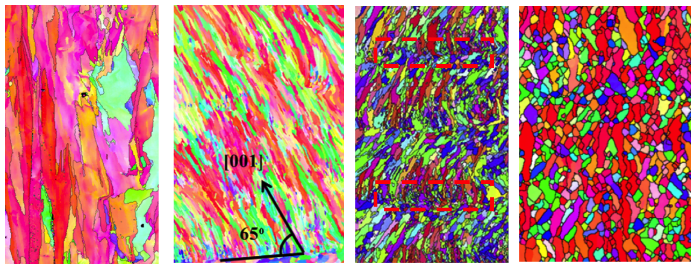
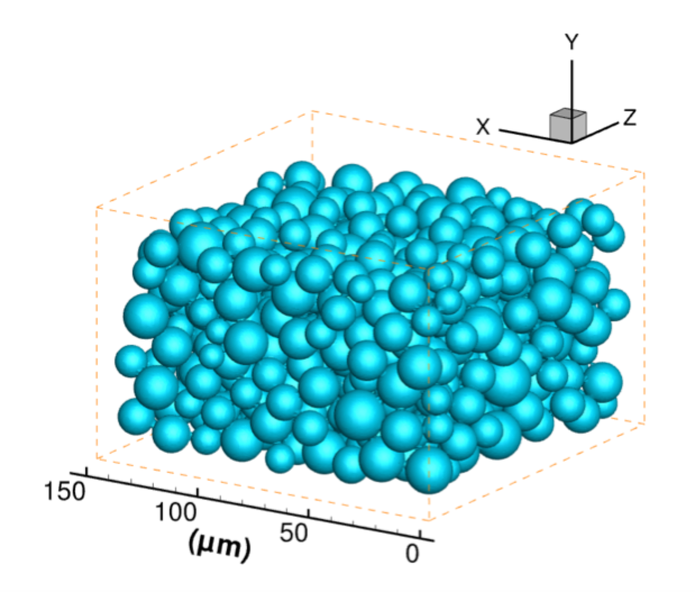
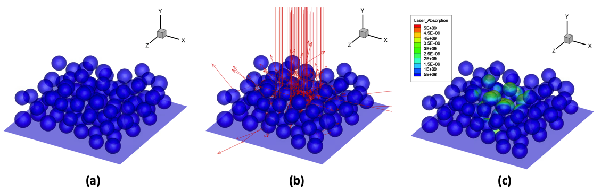

Metal Additive Manufacturing (MAM) is an emerging technology
whose potential of achieving flexible geometry for metallic parts has revolutionizing
impact on the manufacturing industry. Similar to many newly-developed manufacturing
techniques, the maturation of MAM is hindered by two principal issues. First, the
underlying science, especially during the building process of MAM, is not well understood,
which brings the second issue, that the relationships between the Process, Structure,
Property, and Performance (PSPP mapping) are not well understood. Not rarely, the success
of a build relies on time-costly trial-and-error experiments that find the optimal
selection of process parameters in large parameter space. Unfortunately, the optimal
parameters cannot transfer among different materials and machines. The quality and
consistency of MAM-built parts still need to be improved for demanding applications,
e.g., aerospace and aeronautics.
My research is to develop computational models to simulate the MAM process and the
microstructure evolution in the MAM-built part. Quantitative information that is
difficult to extract by experiments can be obtained by the models, e.g., the
three-dimensional temperature, fluid flow, pressure, grain sizes, and texture. This
quantitative information facilitates the understanding of the fundamental science in MAM
and consequently advances the knowledge of PSPP mapping for MAM.
Specifically, I develop a multi-physics process model to simulate as closely as possible the
complex and intertwined physical phenomena in a MAM process. The temperature in the built
part as a function of time and space is extracted from the process model, which is then fed
into a structure model. The structure model simulates the grain nucleation and growth and
predicts the grain size and morphology in the built part. These models are developed based
on principles of fluid mechanics, thermodynamics, heat transfer, and some particular
aspects of material science.
Background
In Laser Powder Bed Fusion (LPBF) process, a scanning laser melts a
pre-deposted powder bed layer-by-layer to build 3-dimensional build. Source of the
video:
Lawrence Livermore National Laboratory.
High-speed optical imaging reveals that powders are entrained towards, and
subsequently ejected from the laser-illuminated region in LPBF processes. Source of
the video:
Bidare, P., et al. Acta Materialia (2018).
High-speed X-ray imaging shows the depression of molten pool created by the vapor
plume. The latter triggers the spattering of powders.Source of the video:
Cunningham, R, et al. Science (2019).

Typical grain structures at cross sections of MAM-built. There is a wide variety of
grain structures that can be achieved depending on different process parameters. The
grains can be very coarse and columnar (most left), or fine and equiaxed (most
right). The two middle figures show coexistence of columnar and equiaxed grains,
where typically, equiaxed grains are "sandwiched" between two layers of columnar
grains.
Powder Bed Generation and Ray Tracing
This project is aimed to set the foundations for the subsequent multiphyscis simulations
for MAM processes. In this project, a powder bed generation model is used to create the
structure of a powder bed as in LPBF processes. Then the initial laser-metal interaction,
i.e., right when the laser is turned on, is simulated using the ray-tracing algorithm. The
laser absorption distribution on the powder surfaces is computed, which will trigger
the melting and vaporization of the metal.
A randomly packed powder bed is generated by a
"rain-dropping" algorithm (Jodrey, W., et al. Simulation (1979)). The powder bed is then represented by the level-set
function. Based on the level-set field, the ray-tracing algorithm is implemented to track
the mutliple reflections of laser beam on powder surfaces, which eventually provides the
absorption distribution.

Typical powder bed generated with the rain-dropping algorithm. The powder size is Gaussian distributed, with
a magnitude of tens of micrmeters, as in typical laser powder bed fusion processes. The powder bed thickness is
about 100 μm.

Ray-tracing algorithm. (a): A powder bed. (b): ray bundles are shot from top and each ray
is traced for its multiple reflection on powder surfaces. (c): Collect the absorbed energy from each ray and the
absorption distribution on the powder surface can be obtained.